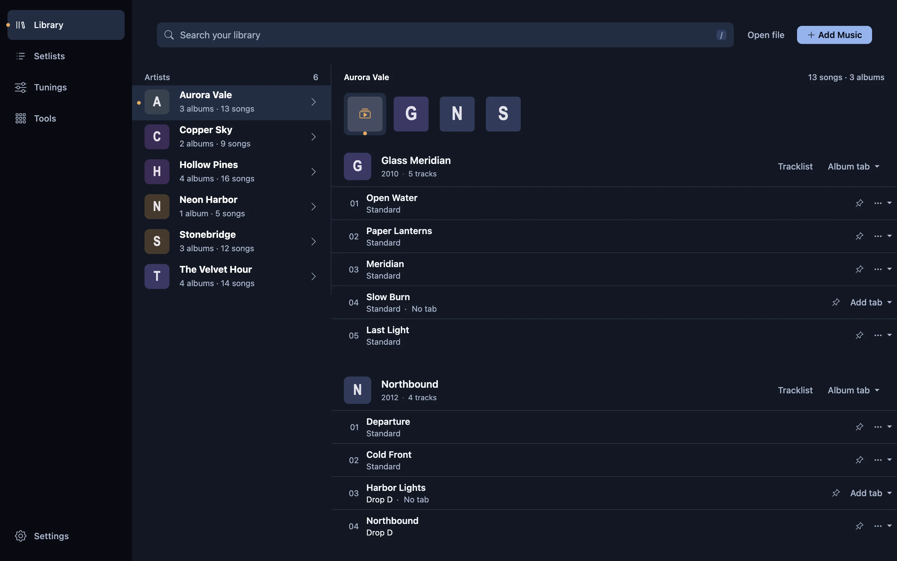
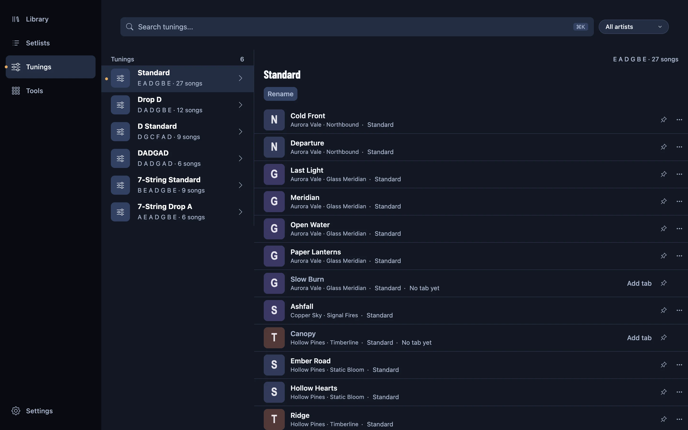
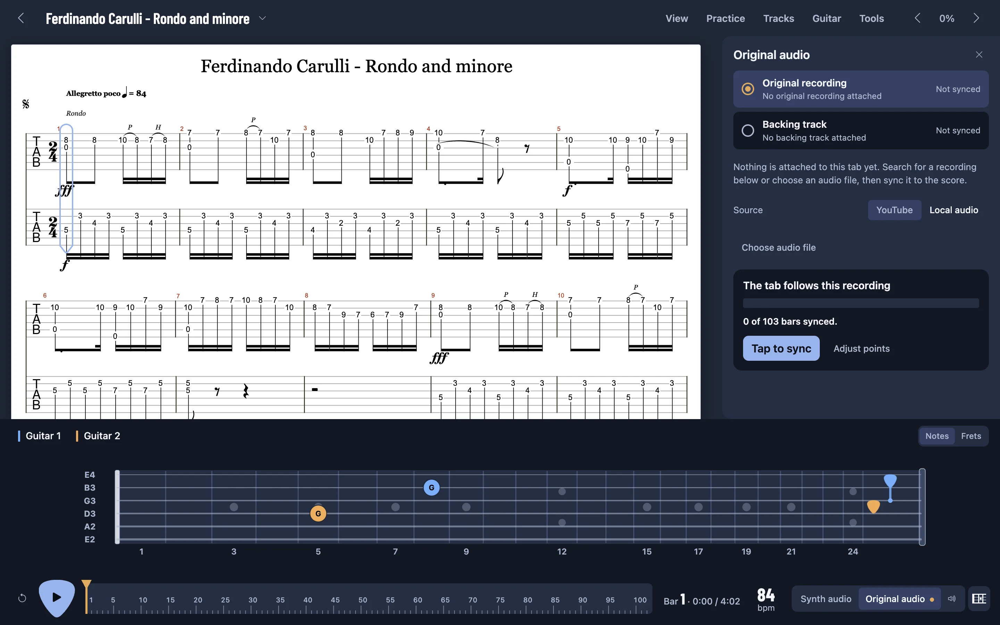
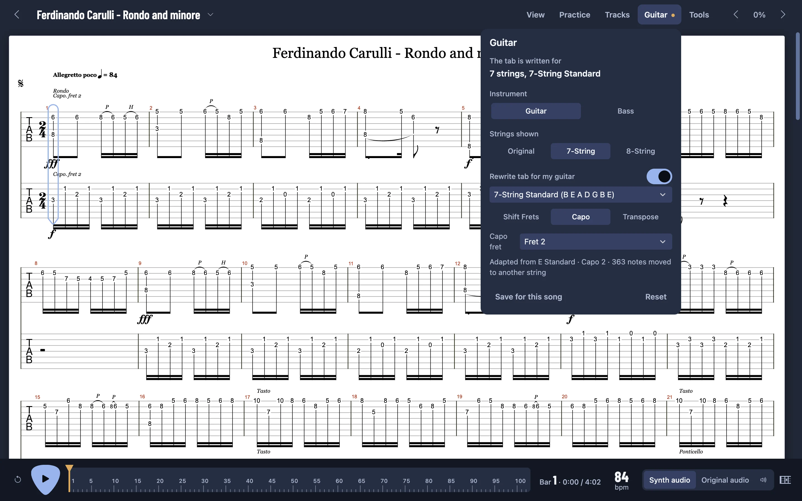
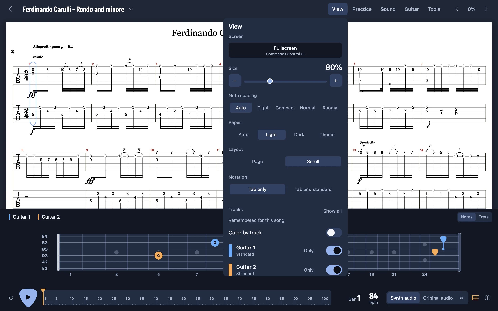
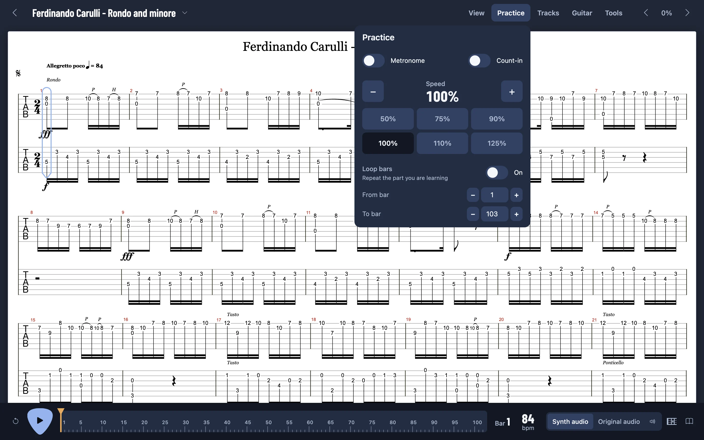
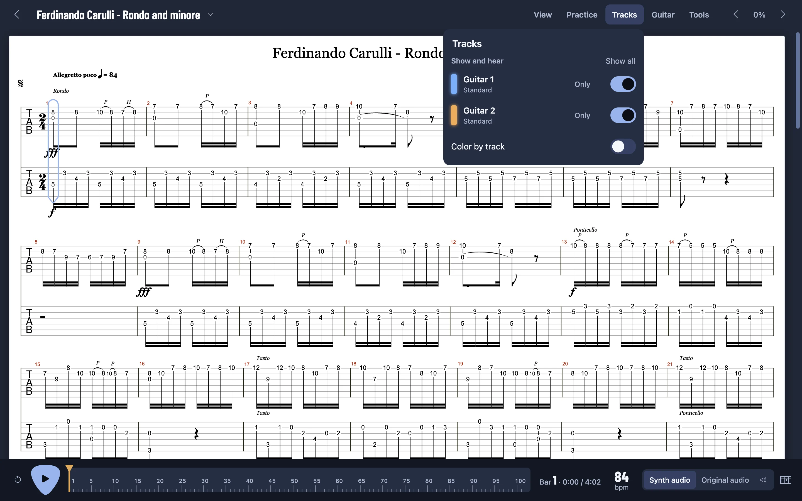
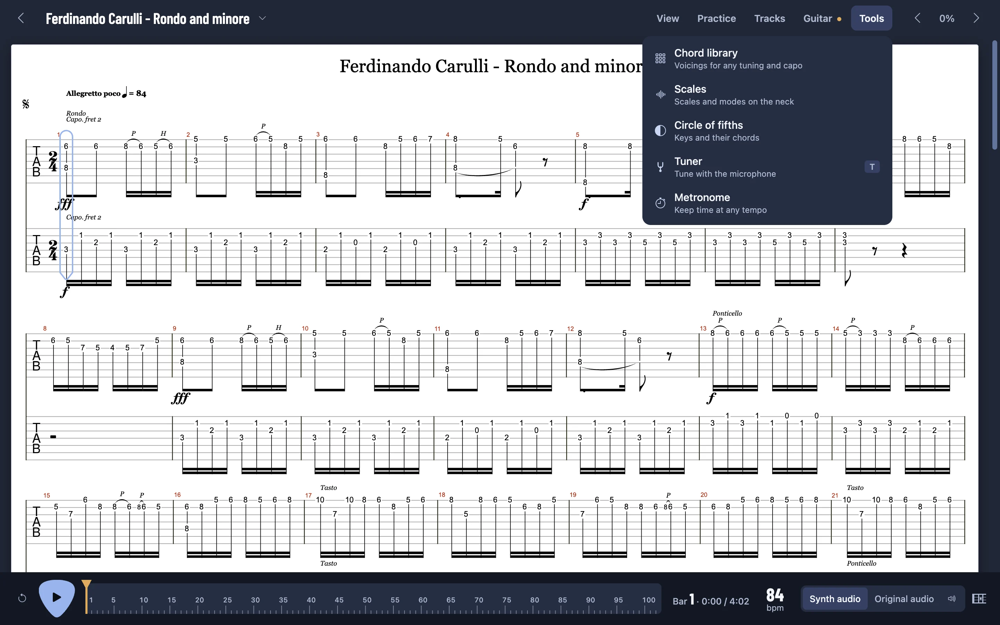

Your music stand. Without the mess.
Bring all your guitar tabs into one library, fitted to your guitar and synced to the original recording.
MajesticTab opens Guitar Pro files, PDFs and text tabs. No subscriptions, no ads and no accounts.
A library, not a folder of files
Most tab apps hand you a list of files. MajesticTab builds a real library around the songs you play, so every tab has a home.
Artists, albums and tracklists
Add the songs or albums you play, then link your Guitar Pro, PDF and text tabs to them. MajesticTab fetches artist discographies, album covers, release years and track orders, so what you add matches the real releases.
Several tabs per song·pin songs·search as you type·reopen the last tab you used

Browse by tuning
Every song knows its tuning. Group your library by Standard, Drop D, D Standard, DADGAD, 7-string or a tuning of your own, and build a set that needs no retuning between songs.

Setlists
Build, edit and play through your gig or rehearsal order.
Custom collections
Group tabs into playlists, live sets, exercises or tuning categories.
Bulk PDF export
Export every tab in your library as a printable PDF in one ZIP archive.
One-file backup
Export or restore your library, settings and SoundFonts in one .mtbackup file.
Your tabs, wherever they live
You choose where tabs come from, and where your backups and synced library go.
On your device
Open Guitar Pro (.gp, .gp3 to .gp5, .gpx), PDF and text files from your computer, phone or tablet. They stay on your device unless you choose to back them up or sync them.
Offline-first
In your own cloud
Connect Google Drive, S3, WebDAV or iCloud to browse folders, open scores on any of your devices, keep your library in sync across them and save full-library backups. It is your account, and it is optional.
Google Drive·S3·WebDAV·iCloud
Search the web for tabs
Search tab sites without leaving the app. Every tab you save lands in your library with its album metadata, tuning and track details already filled in.
Tab sites·Album metadata
Play along with the original recording
Sync any tab to the record you learned it from, and the cursor follows the music.
Tap along once
Link the original recording from YouTube, or an audio file on your device. Press Tap to sync, then click each bar as you hear it. From then on the cursor follows the recording through tempo changes and live drift, and the metronome and count-in follow it too.
YouTube·audio files·backing tracks

Fix a stretch, not the song
Re-tap a range of bars, nudge a point and audition the moment around it, or snap a tap to the nearest sound in your audio file.
A backing track too
Attach a separate backing track to the same tab and sync it the same way, then switch between the original and the backing track.
Your audio stays yours
Audio files live on your device. They travel with your backups and cloud sync unless you turn that off.
Make any tab fit your guitar
Show a Guitar Pro tab on 7 or 8 strings, or move the frets to match your tuning, with a capo or transposed, and every note keeps its pitch. It applies to the song you have open and resets when you close it. Save it for that song, or as your usual guitar, only when you want to.
Shift frets·capo·transpose·7 and 8 string

Jam on the same page, in the same room
One player hosts a session on the local network and everyone else joins from their own device. Playback position and YouTube stay in sync, so the whole band is on the same bar at the same time.
Join with a QR code
Each host address has a copy button and a QR code, so players can join from a phone in seconds.
Share any song type
Guitar Pro, PDF and text tabs all open for every player.
Give everyone a track
Assign each guitarist a part. Play only the assigned tracks, or only the backing tracks.
Control the audio
Mute audio on guests, or mute assigned tracks for people who have no assignment.
Every MajesticTab app can host a Jam, and everyone else joins from their own app on the same network.
And the basics, done properly
Everything else you expect from a tab reader is here.
Read
Every guitar part sits on the page together, in scroll or book-like pages. Drums, bass, keys and vocals stay out of the way, and MajesticTab remembers your tracks for each file.
Hear
The built-in synth plays the tab offline, with a mixer for every track and room for your own SoundFonts.
See
The virtual fretboard lights up the notes in the current beat, with a color for each track, and flips for left-handed players.
Practice
Speed from 50% to 125%, loop the bars you are learning, count in, keep time with the metronome and rewind ten seconds with one press.
Tools
A chord library for any tuning and capo, scales, the circle of fifths, a tuner and a metronome are one tap from the score.
Look
Nine app themes, light or dark sheets, and foot pedal or gamepad page turns for when your hands are busy.
One reader, five buttons
View
Layout, notation, size, paper and the pages shown. Scroll or page mode, tab only or tab with standard notation, a light or dark sheet.
Practice
Speed from 50% to 125%, the loop range, the metronome and a count-in. Learn a solo slowly, then bring it up to tempo.
Tracks
Which tracks to show and hear, their levels and their color. Switch to one guitar, or to everything but the guitars.
Guitar
Strings, tuning and capo for the guitar in your hands. It resets when the song closes, and is saved for the song, or as your usual guitar, only when you ask.
Tools
The chord library, scales, the circle of fifths, a fretboard, a tuner and a metronome, one tap from the score.




The short version
- 5
- platforms: iOS, macOS, Windows, Android and Linux, with iPad and Steam Deck included
- 3
- kinds of tab file: Guitar Pro, PDF and text
- 6·7·8
- strings: show any Guitar Pro tab on a 6, 7 or 8 string guitar, in your tuning
- 9
- app themes, each with a light or dark sheet
- 0
- ads, accounts or subscriptions
No subscriptions. Every feature included.
There are no monthly bills, no ads and no accounts.
Purchasing MajesticTab in commercial app stores supports ongoing development and gives you seamless, automatic store updates.
If you prefer to install it yourself, direct installer downloads (macOS DMG, Windows EXE), the Android APK, F-Droid and Linux packages are completely free and open source.
Whichever way you install it, every single feature is included forever.
- Guitar Pro, PDF and text tabs, with your whole library
- Multi-track playback, mixer, speed control and YouTube backing tracks
- Fretboard, tuner, chord library and Jam sessions
- Every theme, setlists, custom SoundFonts and bulk PDF export
- Foot pedal and gamepad page turns
- Backup and sync with Google Drive, S3, WebDAV or iCloud
Questions
How does pricing work?
MajesticTab is sold as an upfront one-time purchase in commercial app stores to support ongoing development and provide automatic updates. Direct installer downloads (.dmg, .exe), the Android .apk, F-Droid and Linux packages are completely free and open source.
Are there subscriptions or locked features?
No. There are no subscriptions, no in-app purchases, no ads and no trial clocks. Whichever version you use, every feature is unlocked from day one.
Does it work offline?
Yes. It is a native app, and the built-in synth plays tabs with no connection. YouTube, web search and cloud sync need internet, and you choose whether to use them.
Which files can I open?
Guitar Pro files (.gp, .gp3 to .gp5, .gpx), PDFs and text tabs, from your device or from Google Drive, S3, WebDAV or iCloud.
Where are my tabs kept?
On your device, unless you choose to back them up or sync them. Connect your own Google Drive, S3, WebDAV or iCloud to keep every device in step, or save everything to one .mtbackup file.
Can I sync a tab to the original recording?
Yes. Link a YouTube video or an audio file from your device, then tap along to sync it bar by bar. The audio stays on your device and can travel with your backups.
Can it find tabs for me?
Yes. You can search tab sites without leaving MajesticTab. Each tab you save is added to your library with its album metadata and tuning.
Can I jam with friends?
Yes, on the same network. Every MajesticTab app can host a Jam, and everyone else joins from their own app.
Does it work with my 7 or 8 string guitar?
Yes. Show a Guitar Pro tab on 7 or 8 strings, or move the frets for your tuning or capo. Every note keeps its pitch.
Download MajesticTab
A native app that runs offline, with every feature included.